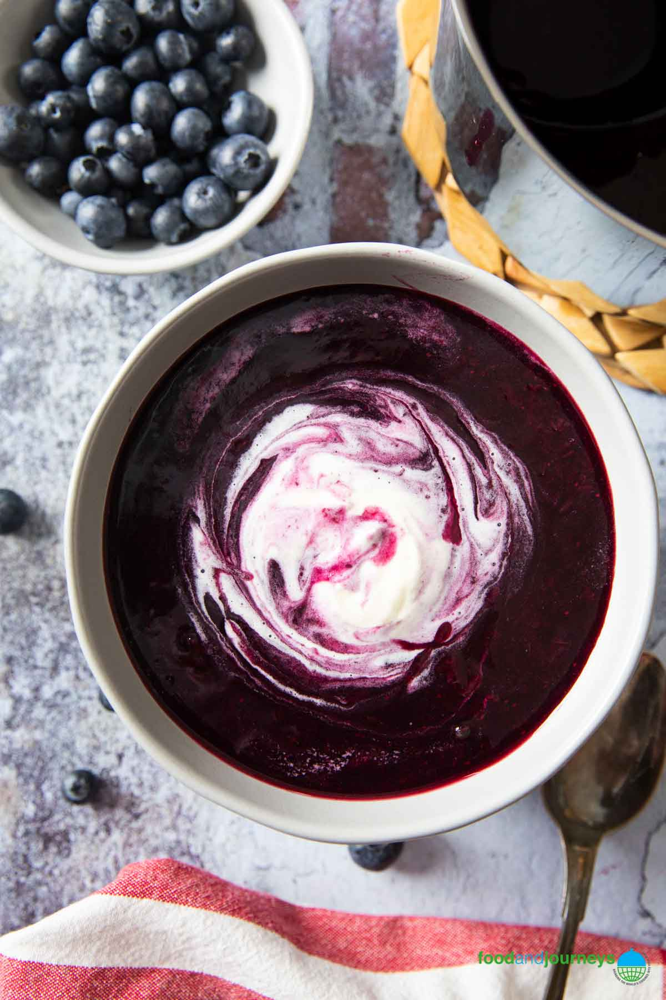

Blåbärssoppa Recipe
Description
Swedish blueberry soup is traditionally made with bilberries, sometimes called European blueberries.
Blueberry soup is the most popular beverage on Sweden’s longest ski marathon, every first Sunday of March. Almost every skier carries a vacuum flask of blåbärssoppa with them.
Ingredients
- Blueberries - you can use fresh or frozen blueberries.
- Sugar - regular white sugar is excellent for this blueberry soup recipe.
- Cornstarch - just use your favorite brand; to thicken the soup a bit.
- Cream - you can use light cream or heavy cream. Just whip it for a few minutes, then place at least a dollop on your blueberry soup when serving.
Steps
- Start preparing your blåbärssoppa by combining the blueberries with sugar and one and a half cups of water in a medium-sized saucepan.
- Set on medium-high heat, cover with a lid, and bring to a boil.
- Adjust heat to low and simmer for ten to fifteen minutes, or until the blueberries turned soft.
- Stir occasionally to make sure nothing sticks on the bottom of the pan.
- Take the saucepan out of the heat and use an immersion blender to puree some or all of the blueberries.
- Using a small bowl, combine and mix cornstarch with one tablespoon of cold water.
- Place the saucepan back on the heat and slowly pour the cornstarch and water mix.
- Continue stirring your blåbärssoppa until it thickens; adjust the taste at this point as well.
- Take the pan off the heat and transfer the soup into serving bowls.
- Place a dollop of whipped cream on top of your blueberry soup, if desired.
- Serve hot or cold.
Other Recipes:
Back to Home